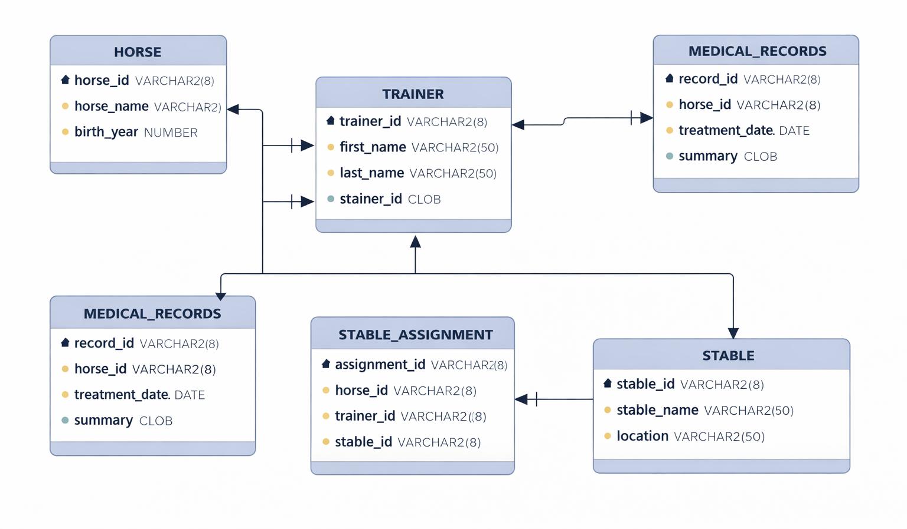

Pantrix — Smart Cooking Assistant
A smart web application that matches available home ingredients with suitable recipes
to reduce food waste. It includes recipe ranking, filters for cooking time and categories,
and allergy or dietary restriction options.

Horse Stable Management Database
A database system designed to manage horse stable operations efficiently.
The system stores information about horses, trainers, medical records, and stable assignments
using well-structured relational database tables. It demonstrates the use of SQL queries,
relationships, and data organization to handle real-world management scenarios.